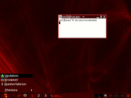

IceWM
Dieser Artikel wurde für die folgenden Ubuntu-Versionen getestet:
Ubuntu 16.04 Xenial Xerus
Ubuntu 14.04 Trusty Tahr
Zum Verständnis dieses Artikels sind folgende Seiten hilfreich:

IceWM  ist ein schneller und einfacher Fenstermanager. Sein erklärtes Ziel ist, den Benutzer so wenig wie möglich zu stören und trotzdem mit hilfreichen Funktionen zu dienen. Bereits seit Ende der neunziger Jahre des letzten Jahrtausends in Entwicklung, erlangte IceWM durch die Vorinstallation auf den ersten Asus Eee PCs ab 2007 größere Verbreitung.
ist ein schneller und einfacher Fenstermanager. Sein erklärtes Ziel ist, den Benutzer so wenig wie möglich zu stören und trotzdem mit hilfreichen Funktionen zu dienen. Bereits seit Ende der neunziger Jahre des letzten Jahrtausends in Entwicklung, erlangte IceWM durch die Vorinstallation auf den ersten Asus Eee PCs ab 2007 größere Verbreitung.
Installation¶
Die Installation ist denkbar einfach, denn es muss nur das folgende Paket installiert werden [1]:
icewm (universe)
 mit apturl
mit apturl
Paketliste zum Kopieren:
sudo apt-get install icewm
sudo aptitude install icewm
Zusätzlich liegen in den Quellen
icewm-experimental, universe
icewm-lite, universe
icewm-gnome, universe, nur bis Ubuntu 14.04
Erstere Version bietet zusätzliche Features wie z.B. das Antialiasing von Symbolen (Icons). icewm-lite kann man als Kernpaket betrachten, es liefert ein IceWM ohne Taskbar. icewm-gnome ist praktisch, wenn IceWM als Ersatz für Metacity in GNOME genutzt werden soll, mit diesem Paket gelingt eine nahezu vollständige Integration.
Benutzung¶
IceWM fühlt sich in den Standardstellungen an wie eine Mischung aus Windows und Linux. Das ist durchaus positiv gemeint: Sinnvolle und gewohnte Funktionen der Windowsversionen werden vermischt mit solchen, die sich in Linux-Fenstermanagern durchgesetzt haben, ergänzt durch Besonderheiten von IceWM.
Das Panel spiegelt all dies exemplarisch wieder. Es erinnert auf den ersten Blick an Windows. Links ein Menü, rechts daneben Startbuttons für Programme, es folgt eine freie Fläche, in der aktive und minimierte Programme angezeigt werden, danach die Taskleiste und eine Uhr. So weit, so altbekannt. Jedoch wurden in der Beschreibung die Erweiterungen ausgelassen: Die Buttons zum Umschalten zwischen den virtuellen Desktops sind linuxtypisch und zwei kleine Monitore, in denen die CPU- und die Netzwerkauslastung angezeigt werden, sind eine Besonderheit von IceWM und sonst nur per Desklets zu haben - praktisch um zu überprüfen, ob Eingaben eine Reaktion hervorrufen bzw der Download noch läuft.
Diese Vermischung der Welten und die ideologiefreie Betonung auf Praxistauglichkeit zieht sich durch den ganzen Fenstermanager. So ist das Menü sowohl durch den "Startbutton" unten links als auch durch einen  -Klick auf den Desktop, auf dem übrigens keine Symbole liegen, aufrufbar. Die meisten Windows-Tastenkombinationen (Shortcuts) sind als Standardeinstellung vordefiniert. Kein Wunder also, dass eine Vielzahl an Designs das Aussehen von Windows oder Mac nachzubilden versucht.
-Klick auf den Desktop, auf dem übrigens keine Symbole liegen, aufrufbar. Die meisten Windows-Tastenkombinationen (Shortcuts) sind als Standardeinstellung vordefiniert. Kein Wunder also, dass eine Vielzahl an Designs das Aussehen von Windows oder Mac nachzubilden versucht.
Konfiguration¶
Die Konfiguration erfolgt über mehrere Dateien per Texteditor [3]. Um für jeden Benutzer verschiedene Konfigurationen zu ermöglichen, erstellt man im Homeverzeichnis den Ordner ~/.icewm/, kopiert die entsprechenden Dateien dort hinein und ermöglicht dem Benutzer das Editieren [4]. Diese Dateien haben für IceWM dann höhere Priorität als die Dateien im systemweiten Verzeichnis /etc/X11/icewm.
Bei einer Installation über die Quellen befinden sich diese mit Beispielkonfigurationen gefüllten Dateien im systemweiten Verzeichnis. Sie können als Grundlage zur Erstellung eigener Konfigurationen dienen. Man beachte: Mit # beginnende Zeilen sind auskommentiert und werden ignoriert.
keys - Hier kann man zusätzliche Tastenkürzel definieren
menu - Kontrolliert den Inhalt des Startmenüs
preferences - Regelt das gesamte Verhalten
des Fenstermanagersprefoverride - erlaubt das Überschreiben von Preferences, auch wenn es sich um Built-In-Defaults handelt
toolbar - Die Icons in der Taskleiste
winoptions - Hiermit kann man einzelnen Anwendungen ein bestimmtes Verhalten zuweisen
Menüs¶
Das Startmenü kann man in der Datei menu bearbeiten. Die Syntax:
Programmeintrag:
prog Menüname Icon Programmname
Trennlinie:
Seperator
Ordner:
menu Name Icon { prog ... }Datei integrieren:
menufile Menüname Icon Dateiname
Und hier ein Beispiel:
prog xterm xterm xterm -ls
separator
menu Applications folder {
menu Editor folder {
prog Abiword abiword abiword
}
}Dabei werden die Programmeinträge nur angezeigt, wenn das entsprechende Programm auch wirklich installiert ist. Nach den Icons sucht IceWM im Homeverzeichnis im Ordner .icewm/icons sowie systemweit in /usr/share/icewm/icons. In der preferences können aber auch zusätzliche Iconordner angegeben werden, die Option lautet IconPath.
Shortcuts¶
Mit Tastenkombinationen kann man Programme starten und einzelne Aktionen ausführen. Sie werden in der Datei keys definiert. Das Prinzip:
1 + 2 : Programm oder Aktion
Zum Beispiel:
key "Alt+CTRL+T" x-terminal-emulator key "Alt+CTRL+n" firefox -noraise -remote openBrowser
Außerdem ist es möglich, auf diesem Weg Multimediatasten der Tastatur zu nutzen.
key "XF86AudioStop" cdplay stop
Auch solche Kombinationen sind schon vordefiniert.
Built-In-Shortcuts¶
IceWM verfügt über Short-Cuts, die per Voreinstellung an die Funktionen des Fenstermanagers gebunden sind. Beispielsweise ist die
Funktion des Schließens eines Fensters auf die Tastenkombination Alt+F4 gelegt. Diese Voreinstellung kann umdefiniert bzw. überschrieben
werden. Dies muss in der Datei prefoverride erfolgen (also nicht in preferences!).
Beispiel:
KeyWinClose="Alt+F2"
Hier wird die Tastenkombination Alt+F2 zum Schließen eines Fensters verwendet.
Insbesondere wenn solche Tastenkombinationen in Konflikt mit anderen Anwedungnen stehen, kann es erforderlich sein, diese Vorbelegung des IceWM zu ändern. Für eine Kiosk-Konfiguration ist i.d.R. die Einstellung
KeyWinClose=""
sinnvoll. Nicht definierte Tastenkombinationen werden an die Anwendung weitergereicht. In diesem Fall würde die Information
Alt+F4 an die Anwendung übergeben werden (sofern nicht anderweitig konfiguriert).
Die Vorbelegung ist leider kaum dokumentiert. Die Namen der Funktionen, die an Keys gebunden werden, kann man aus dem Binary mittels
strings /usr/bin/icewm | grep -e "^Key"
extrahieren.
Virtuelle Desktops¶
Anzahl und Name der virtuellen Desktops kann man durch manuelles Editieren der preferences beeinflussen. Die Option lautet:
WorkspaceNames=" 1 "," 2 "," 3 "," 4 "," 5 "
Toolbar¶
Die Toolbar liegt direkt neben dem Startbutton. Sie kann sowohl Programmaufrufe als auch Ordner enthalten. Die Syntax unterscheidet sich nicht von der der menu-Datei. Man kann also die Datei toolbar per Hand editieren.
Programmspezifische Einstellungen¶
Die Datei winoptions kann Programme wie Devil's Pie ersetzen. Sie regelt also das Verhalten der einzelnen Fenster bzw. Programme. Soll Opera auf dem ersten Desktop, auf dem zweiten oder auf allen angezeigt werden? Soll xterm in der Taskleiste erscheinen oder nicht? Außerdem werden hier den Programmen passende Icons zugeordnet.
Die Programme werden an der Klasse des jeweiligen Fensters identifiziert. Um diese herauszufinden, gibt man in ein Terminal diesen Befehl ein
xprop |grep WM_CLASS
Danach klickt man auf das zu identifizierende Fenster, und schon wird im Terminal die Klasse ausgegeben.
Als Beispiel hier einige winoptions-Einträge:
Opera landet immer auf dem dritten Desktop. IceWM zählt von 0 an:
opera.workspace: 2
Ein X-Terminal bekommt immer ein Tray-Icon:
xterm.tray: Exclusive
Damit z.B. Eterm auf allen Arbeitsflächen unterhalb aller anderen Programme geöffnet wird, ist folgendes einzufügen:
##Eterm Eterm.allWorkspaces: 1 Eterm.ignoreTaskBar: 1 Eterm.doNotCover: 0 Eterm.layer: Desktop
Eine vollständige Liste aller möglichen Optionen findet sich hier .
Autostart¶
Man erstellt sich eine Datei startup im Ordner .icewm im Homeverzeichnis. In diese schreibt man das zu startende Programm hinein. Will man mehrere Programme starten, muss meist ein & angefügt werden. Ein Beispiel:
#!/bin/sh gaim& xchat
Danach muss diese die Datei ausführbar gemacht werden [4].
Maus-Fokusmodell¶
Das Fokusmodell, also welches Fenster wann fokussiert (aktiviert) und in den Vordergrund geholt werden soll, kann auf grafischen Wege konfiguriert werden, wodurch die in der preferences gemachten Einstellungen ignoriert werden können. Im Startmenü unter "Settings -> Focus" befinden sich nun diese drei Optionen:
"Click to focus": Klickt man mit der Maus auf ein Fenster, wird dieses aktiviert und in den Vordergrund geholt.
"Sloppy mouse focus": Fenster werden aktiviert, wenn der Mauszeiger sich auf ihnen befindet, ein Klick holt das Fenster in den Vordergrund.
"Custom": Die Einstellungen der preferences werden übernommen. In dieser kann das Fokusmodell mit diesen Optionen
umfassend angepasst werden.
Aussehen¶
Design¶
Designs (Themes) regeln das Aussehen der Fenster, Taskbar und Menüs. Um Designs zu nutzen, erstellt man sich im Homeverzeichnis den Ordner .icewm/themes und kopiert die gewünschten Designs dort hinein. Außerdem muss die Datei ~/.icewm/theme erstellt werden.
Nun kann man im Startmenü per Mausklick das gewünschte Design auswählen. Die installierten Designs sind unter "Settings -> Motive" gelistet.
Hintergrund¶
Hierfür existiert keine eigene Datei. Jedoch kann man ein Hintergrundbild auswählen, indem man das genutzte Design editiert. Dafür schiebt man das gewünschte Hintergrundbild in den Ordner .icewm/themes/genutzes-theme im Homeverzeichnis. Dann fügt man in die sich in diesem Ordner befindende Datei default.theme beispielsweise folgende Zeile ein:
DesktopBackgroundImage="Wallpaper.jpg"
Alternativ kann man diese Option auch in der preferences setzen. Allerdings überschreibt eine Einstellung des Designs die der preferences. Mit dem Befehl
icewmbg
kann der aktuell eingestellte Hintergrund wieder gezeichnet werden, sollte er beispielsweise durch ein anderes Programm geändert worden sein.
Icons¶
Den Download eines passendes Symbolpakets findet man auf der IceWM Homepage. Es beinhaltet die Icons und eine angepasste winoptions-Datei, in der die Icons den entsprechenden Programmen zugeordnet werden. Um diese oder eigene Icons zu nutzen, erstellt man einen Ordner .icewm/icons im Homeverzeichnis und ersetzt die winoptions mit der aus dem Archiv.
Alternativ kann man natürlich auch beliebige Icons nehmen und die winoptions entsprechend editieren.
Desktopsymbole¶
Mit den Hilfsprogrammen aus dem Artikel Desktop-Symbole können auch diese dargestellt werden.
Problembehebung¶
Aus IceWM herunterfahren¶
IceWM bietet in der Standardkonfiguration zwar die Möglichkeit, sich abzumelden, aber nicht, den PC Herunterzufahren. Um das zu ändern, sind mehrere Wege möglich.
Mit gksudo¶
In der preferences muss dieser Befehl zum Herunterfahren gesetzt werden:
ShutdownCommand="gksudo shutdown -h now"
Dafür muss das Paket
gksu
mit apturl
Paketliste zum Kopieren:
sudo apt-get install gksu
sudo aptitude install gksu
installiert sein [1]. Um die doppelte Abfrage zu verhindern, kann
ConfirmLogout=0
mit in die preferences eingetragen werden.
Mit sudo¶
Alternativ lautet der Befehl zum Herunterfahren
ShutdownCommand="sudo shutdown -h now"
Da sudo aber normalerweise eine Passwortabfrage erfordert, muss die Passwortabfrage ausgeschaltet werden. Siehe Herunterfahren.
Mit GDM-Signal¶
Benutzt man GDM, kann man dessen Funktion nutzen. Dafür muss er so eingestellt sein, dass jeder Herunterfahren darf.
Der Shutdownbefehl lautet dann:
ShutdownCommand="gdm-signal -h && killall icewm-session"
Dadurch braucht man kein Passwort einzugeben, um den Rechner herunterzufahren. Analog dazu kann man auch für einen Neustart verfahren:
RebootCommand="gdm-signal -r && killall icewm-session"
Das Paket
powermanagement-interface (universe)
mit apturl
Paketliste zum Kopieren:
sudo apt-get install powermanagement-interface
sudo aptitude install powermanagement-interface
muss installiert [1] sein.
Angleichen der GTK+-Programme¶
GTK+2-Programme wie Synaptic sehen in IceWM nicht automatisch so aus, wie man es von Ubuntu gewöhnt ist. Um das zu ändern, muss man ein GTK+-Design auswählen. Dies wird unter GTK+ Design wechseln erklärt.
Links¶
Konfiguration von IceWM
 Artikel Pro-Linux.de, 04/2003
Artikel Pro-Linux.de, 04/2003IceWM Themes
auf Box-look.orgThemen für IceWM
- kleine, bebilderte ÜbersichtFenstermanager
 Programmübersicht
Programmübersicht
- Erstellt mit Inyoka
-
 2004 – 2017 ubuntuusers.de • Einige Rechte vorbehalten
2004 – 2017 ubuntuusers.de • Einige Rechte vorbehalten
Lizenz • Kontakt • Datenschutz • Impressum • Serverstatus -
Serverhousing gespendet von